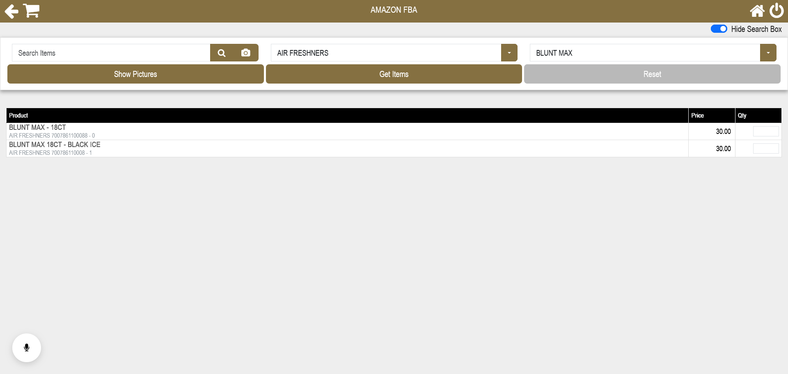
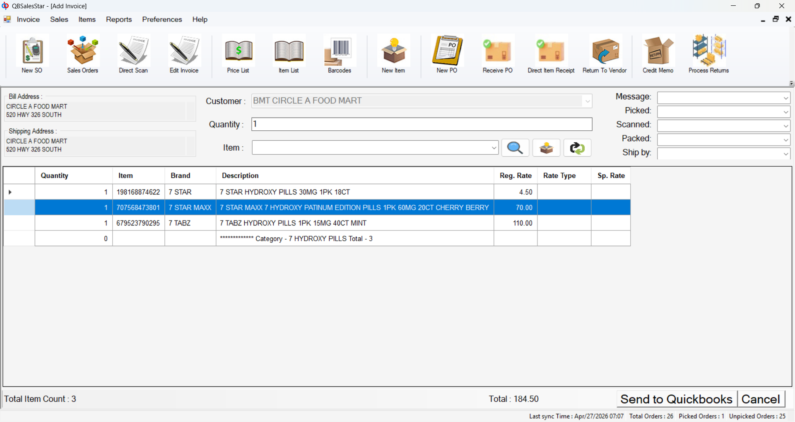

Google Developers
Google Developers
Backend platforms
Design and optimize APIs, services, databases, reporting systems, and integration-heavy workflows.
I am Muhammad Ibrahim Butt, a Senior Software Engineer with 5+ years building scalable APIs, QuickBooks automation, cloud-native platforms, and AI evaluation workflows for SaaS and remote teams.
01 - Services
Design and optimize APIs, services, databases, reporting systems, and integration-heavy workflows.
Automate finance, operations, POS, inventory, QuickBooks, and repetitive internal processes.
Migrate, containerize, monitor, and improve delivery pipelines across AWS, Docker, Kubernetes, and CI/CD.
Build evaluation protocols, benchmarking workflows, RLHF review systems, and agentic AI quality gates.
02 - About
I build backend and automation systems where reliability matters: APIs, integrations, cloud infrastructure, reporting workflows, and AI evaluation pipelines that teams can operate after launch.
My recent work spans agentic AI evaluation at Turing, finance and QuickBooks automation at Linx Computations, and performance-focused backend systems at DevXen and Microbeck. The common thread is practical engineering: simplify workflows, improve system behavior, and leave teams with software they can trust.
I am strongest in ambiguous product environments where business process, data, APIs, and infrastructure overlap. I can own the implementation details, communicate tradeoffs, and turn a loose operational problem into a maintainable technical system.
03 - Selected work


Desktop + web operations platform
A custom desktop and web operations platform for a wholesale distribution client that needed a faster, simpler layer on top of QuickBooks Desktop. QBSalesStar keeps QuickBooks as the accounting source of truth while synchronizing operational data across the web application, local C# application, and background services.
Replaced direct day-to-day use of the full QuickBooks Desktop UI with tailored screens for sales orders, direct invoices, credit/debit memos, purchase receiving, pick lists, back orders, vendors, customers, pricing, and tax reports.
Integrated with QuickBooks Desktop through QBFC15 and QBXML to read and update customers, items, invoices, vendors, purchase orders, price levels, sales reps, ship methods, and related business records.
Built a QB COM event listener that detects QuickBooks changes and synchronizes supported records into the web system and local C# app through MySQL/API publishing, local cache updates, retry/outbox handling, and dead-letter logging.
Sales orders, invoices, purchase orders, receiving, returns, pick lists, back orders, and reporting.
QuickBooks changes flow through the COM event listener into the web app, C# app, MySQL, and API layer.
Invoice PDFs and product images upload automatically from watched folders using numeric identifiers.
Installer bundle, setup wizard, encrypted configuration, service install, and QuickBooks subscription.
Product scope
3-part
desktop + web + QB
Live
COM event sync
File-drop
PDF/image upload
Installer
client setup
Stack & architecture

Built evaluation frameworks across 500+ enterprise scenarios; improved task completion by 40% and cut deployment time by 60% leading a pod of 10 AI trainers.
ML applications for operational and customer data: 20% lift in failure prediction across 500+ machines and 85% sentiment classification accuracy.
Moved legacy monoliths to a containerized AWS architecture with Docker, K8s, and Redis caching. 30% lower cost, 60% better latency, 99.9% uptime sustained.
04 - Experience
A practical track record across AI evaluation, finance automation, backend platforms, and cloud infrastructure for remote teams and production users.
Turing - Remote · Palo Alto, CA
Linx Computations Inc. - Remote · New York, NY
DevXen - Remote · Wollongong, NSW
Microbeck - Faisalabad, Pakistan
Microbeck - Faisalabad, Pakistan
05 - Skills
Languages
 Python
Python
 PHP
C# / .NET
PHP
C# / .NET
 JavaScript
JavaScript
 TypeScript
TypeScript
 C / C++
C / C++
 Java
SQL
Bash
Java
SQL
Bash
Frameworks & Backend
 Laravel
Laravel
 Django
Django
 Flask
.NET / ASP.NET
Flask
.NET / ASP.NET
 Node.js
Express
FastAPI
REST
GraphQL
Microservices
Node.js
Express
FastAPI
REST
GraphQL
Microservices
AI Automation & ML
Data & Storage
 PostgreSQL
PostgreSQL
 MySQL
MySQL
 SQL Server
Redis
Kafka
ETL Pipelines
Data Aggregation
Database Design
SQL Server
Redis
Kafka
ETL Pipelines
Data Aggregation
Database Design
AWS
Cloud & DevOps
 Azure
Azure
 GCP
GCP
 Docker
Kubernetes
Terraform
GitHub Actions
Jenkins
Prometheus
Grafana
Docker
Kubernetes
Terraform
GitHub Actions
Jenkins
Prometheus
Grafana
 Nginx
Linux
CI / CD
Nginx
Linux
CI / CD
APIs & Integrations
Leadership & Soft Skills
06 - Toolbox
Development
AI Platforms
Productivity
07 - Education
Education
National University of Computer & Emerging Sciences (FAST-NUCES)
Relevant coursework
08 - Contact
Available for full-time remote roles, AI automation contracts, and senior backend or cloud engagements. Open to collaborating on meaningful work.
Response within 24h